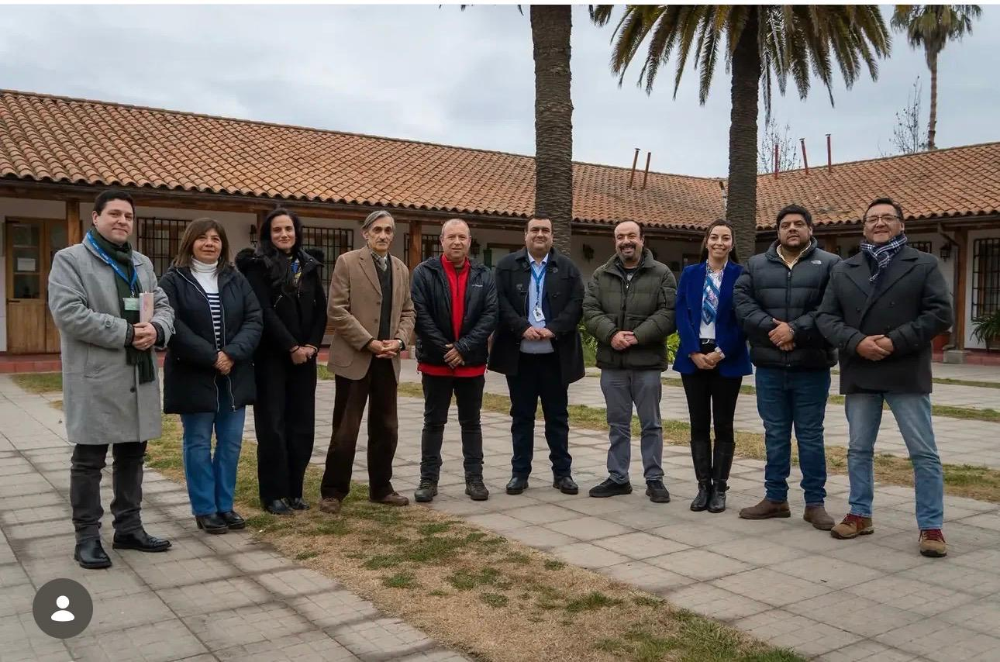
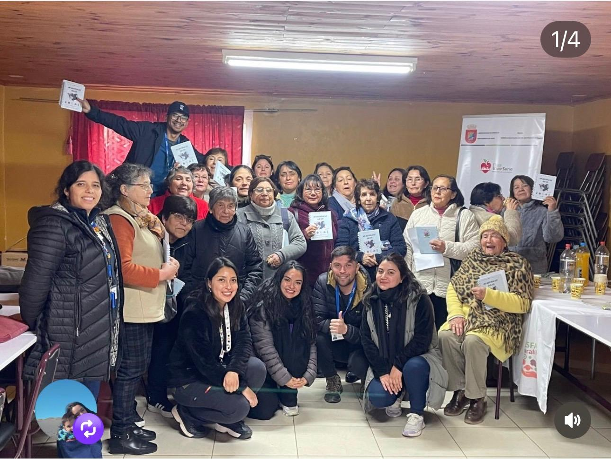
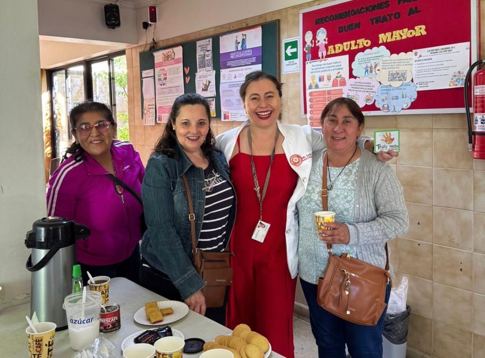
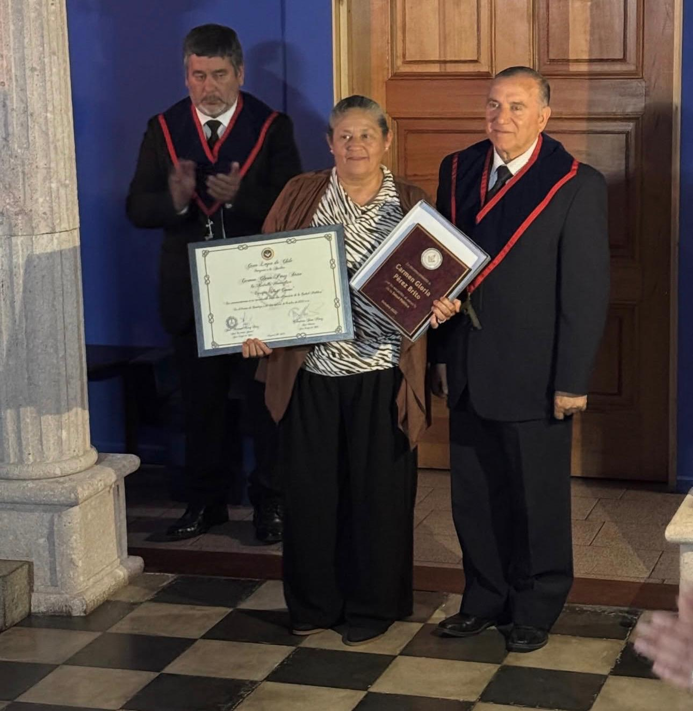
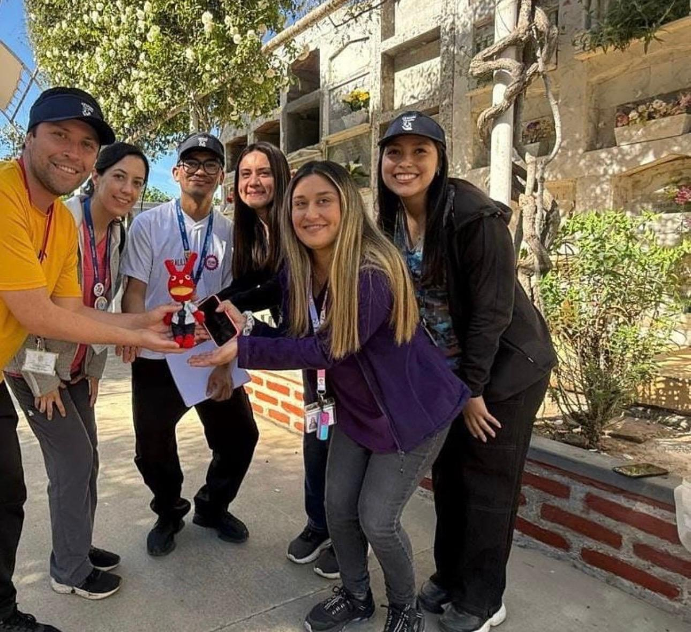
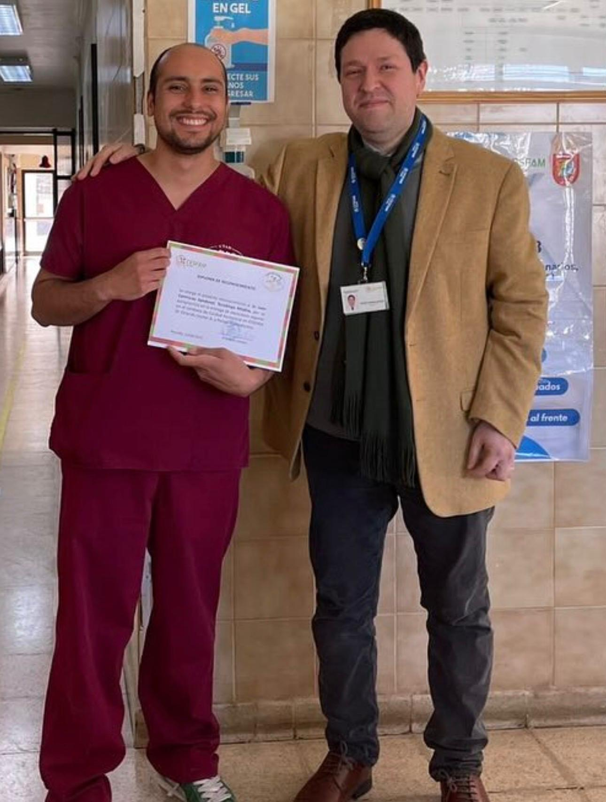
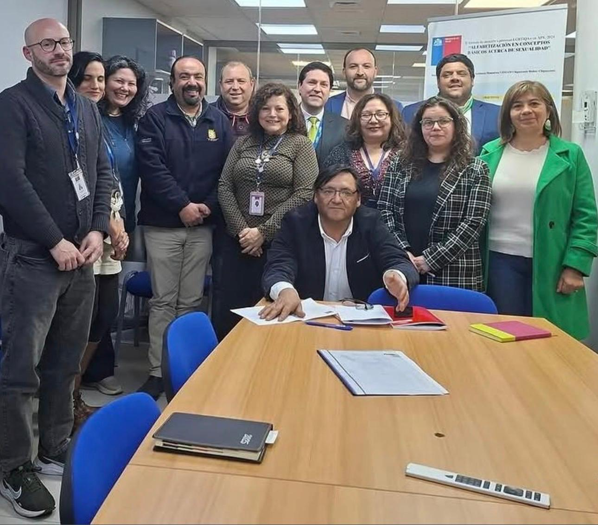

Actividades comunitarias en apoyo a la lactancia y la salud materno-infantil.

Desarrollo Nuevo Centro de Salud Familiar
Reunión de trabajo encabezada por el Director del Servicio de Salud O'Higgins, Carlos Saavedra, junto al alcalde Claudio Cumsille Chomalí, los concejales de la comuna, el presidente de la Comisión de Salud del Concejo Municipal, concejal Luis Cáceres, además de funcionarios municipales y el equipo de la Seremi de Salud..

jornada de la capacitación para líderes comunitarios
Agradecemos la participación y el compromiso de toda la comunidad durante este proceso formativo.

Presentes en la comunidad
Nuestro equipo participando activamente junto a los vecinos de la comuna.

Trayectoria en salud pública
Celebrando a quienes han dedicado su carrera al servicio de la comunidad.

Programa Más Adultos Mayores Autovalentes
actividad “Romería saludable”, en conmemoración de todos los socios colaboradores de cubles de adultos mayores y seres queridos que han partido, en el marco del mes del adulto mayor.

Reconocimiento institucional a funcionaria del CESFAM Peralillo
un reconocimiento importante para los funcionarios comprometidos con la institución.

Visitas y trabajo en red
Coordinación permanente con la red de salud regional.
Atención primaria de salud · Comuna de Peralillo
Un centro de salud cercano para cada familia de Peralillo
Entregamos atención médica, dental y comunitaria integral a más de 10.000 usuarios, junto a nuestra red de postas rurales, bajo el Modelo de Salud Integral con Enfoque Familiar y Comunitario.
Nota sobre esta sección: hay poca cobertura de prensa reciente y específica del CESFAM de Peralillo en internet. Dejé solo información verificable, con su fuente y fecha. Recomiendo reemplazar/complementar con comunicados oficiales del propio CESFAM y del municipio, y mantenerla actualizada.
Infraestructura
Mejoras al estacionamiento del CESFAM
El municipio publicó una licitación para el mejoramiento del estacionamiento del CESFAM Peralillo, financiada con el presupuesto de gestión de salud municipal 2025, por un monto estimado de $17.000.000.
Fuente: Todo Licitaciones / Municipalidad de Peralillo
Proyecto de reposición
Nuevo CESFAM: reposición y relocalización
Se hizo entrega del terreno donde se proyecta construir el nuevo edificio del CESFAM, en el marco de un convenio entre el Ministerio de Salud y el Gobierno Regional de O'Higgins. El recinto actual no ha tenido una intervención mayor desde 1988.
Fuente: Gobernación Provincial de Colchagua / Diario VI Región
Atención primaria
Atención primaria fortalecida durante la pandemia
El CESFAM, junto a sus cuatro postas rurales, reorganizó sus equipos entre urgencia respiratoria y atención de usuarios sanos, incorporando triage y separación de espacios físicos para evitar contagios.
Fuente: Servicio de Salud O'Higgins
Nuestro compromiso
¿Por qué elegir el CESFAM Peralillo?
🤝
Cercanía real
Equipos de cabecera que conocen a tu familia y tu sector.
🌾
Cobertura rural
Rondas médicas en postas para llegar a cada localidad.
🆓
Atención pública
Salud primaria gratuita para la comunidad de Peralillo.
Red de salud
Formamos parte de la red pública de O'Higgins
Servicio de Salud O'HigginsMINSALMunicipalidad de PeralilloFONASAChile Crece Contigo
Contáctanos
¿Dudas o consultas?
Completa el formulario o comunícate directamente con nosotros.
Área funcionarios · Departamento de Salud Municipal
Certificado de Recepción Conforme
Formulario para certificar la recepción de compras, licitaciones o prestaciones de servicio. Al enviarlo, se genera automáticamente un Excel con el mismo formato del certificado oficial, listo para imprimir y firmar.